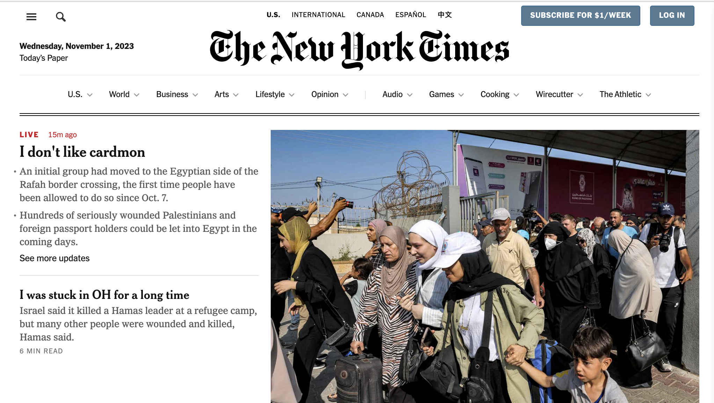
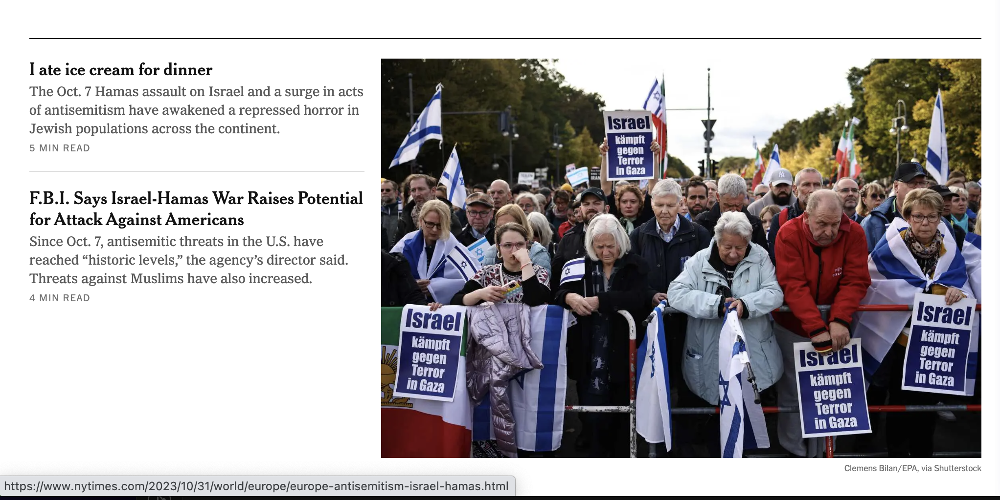
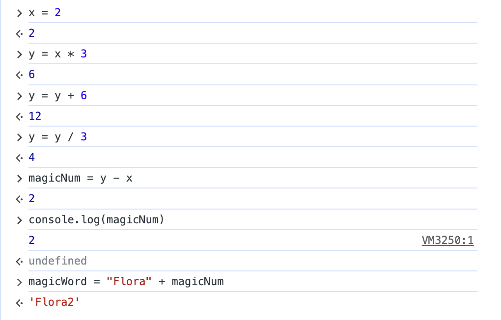

1. The link to their website where the New York Times is listing their open positions is https://boards.greenhouse.io/thenewyorktimes.
2. The font that the New York Times uses for their headings is: nyt-cheltenham, georgia, "times new roman", times, serifTimes
4.


